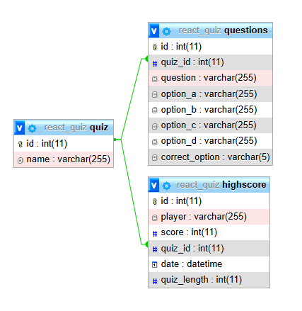

Tietovisa
Yleistä
Tehtävänä on suunnitella ja toteuttaa yksinkertainen tietovisa. Pelissä on erilaisia tietovisoja jotka sisältävät monivalintakysymyksiä. Pelattuaan pelin käyttäjältä pyydetään nimi ja tulokset tallennetaan tietokantaan.

Voit käyttää tietokantana react_quiz.sql-tiedostoa.
Ryhmätyöskentely
Käytetään omaa github-repoa jossa ryhmä voi tehdä yhteisen projektin.
- Tehkää ryhmälle myös projektiseinä ja määritelkää siellä tehtävät
- Backlog, In Progress, Done ja Daily -sarakkeet
Käyttäjät
- Kirjautumaton käyttäjä voi pelata peliä ja nähdä parhaat tulokset.
- Kirjautunut käyttäjä pystyy
- lisäämään uusia tietovisoja, poistamaan olemassa olevia ja muokkaamaan tietovisan nimeä.
- lisäämään tietovisalle uusia kysymyksiä tai poistamaan olemassa olevia.
- tyhjentämään valitun tietovisan high score-taulukon.
Tee taulu tietokannan käyttäjälle (esim. admin tai user) ja mieti sopivat kentät.
Etusivu
Etusivulla näytetään esittelyteksti ja painike Aloita peli joka ohjaa sivulle Pelin aloittaminen. Etusivulla esitetään tietovisojen parhaat tulokset taulukossa. Tulokset ryhmitellään eri kestojen (lyhyt, normaali, pitkä) mukaan.
Pelin aloittaminen
Pelin aloitus tapahtuu valitsemalla haluttu tietovisa alasvetovalikosta. Käyttäjä valitsee myös pelin pituuden (lyhyt - 5 kysymystä, normaali - 10 kysymystä tai pitkä - 15 kysymystä). Peli käynnistyy painamalla 'Pelaamaan!' -painiketta.
Tietovisan pelaaminen
Tietovisan aikana näytetään haluttu määrä kysymyksiä yksitellen. Jos pelaaja vastaa oikein niin näytetään lyhyt animaatio. Mikäli pelaaja vastaa väärin niin oikea vastaus animoidaan ennen siirtymistä seuraavaan kysymykseen.
High score-taulukko
Kun peli päättyy näytetään parhaat tulokset taulukossa. Pelaajan tulos korostetaan tulosjoukossa. Jos tuloksia on yli 20 niin näytetään sivutus (20 tulosta / sivu).
Mieti sopiva tapa esittää taulukon tiedot ja suodattaminen eri kestojen mukaisesti.
Peliä pelataan pääsääntöisesti mobiililaitteella joten sovelluksen tulee huomioida responsiivisuus (Google Chrome Dimensions: iPhone SE).